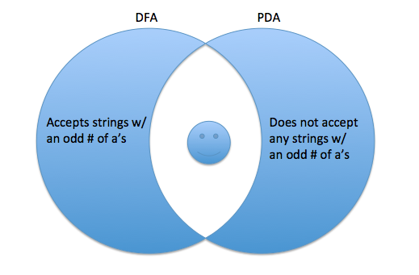

Rules
Language L is decidable if there exists a TM M s.t. for all strings w:
- If w ∈ L, M enters qaccept
- If w ∉ L, M enters qreject
Recall
You may use these other proven decidable languages in your TM:
- ADFA= {<D,w> | a DFA that accepts w}
- ANFA= {<N,w> | N is a NFA that accepts w}
- EDFA= {<D> | D is a DFA and L(D) is empty}
- EQDFA= {<A,B> | A and B are DFA's and L(A)=L(B)}
- ACFG= {<G,w> | G is a CFG that generates w}
- ECFG= {<G> | G is a CFG and L(G) is empty}
Example
Consider B = {<P> | P is a PDA with Σ = {a,b} and P does not accept any strings with an odd number of a's}
Concept
We know that Context Free Languages are closed under intersection with regular languages
This is how I thought of it...

Proof
Construct a Turing Machine M to decide B as follows:
On input <P>:
- Check that <P> is in the proper form of a PDA. If not, reject.
- Create a DFA D that accepts any strings w/ an odd # of a's.
- Create a PDA E that has the same language as B.
- Create a PDA F where L(F) = L(D) ∩ L(E).
- Convert F to CFG G
- Run ECFG A on G.
If A accepts, accept for B. Otherwise, reject.